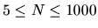
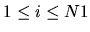

| Problem D: The Necklace |
My little sister had a beautiful necklace made of colorful beads. Two successive beads in the necklace shared a common color at their meeting point. The figure below shows a segment of the necklace:
But, alas! One day, the necklace was torn and the beads were all scattered over the floor. My sister did her best to recollect all the beads from the floor, but she is not sure whether she was able to collect all of them. Now, she has come to me for help. She wants to know whether it is possible to make a necklace using all the beads she has in the same way her original necklace was made and if so in which order the bids must be put.
Please help me write a program to solve the problem.
The input contains T test cases. The first line of the input contains the integer T.
The first line of each test case contains an integer N ( ) giving the number of beads my sister was able to collect. Each of the next N lines contains two integers describing the colors of a bead. Colors are represented by integers ranging from 1 to 50.
For each test case in the input first output the test case number as shown in the sample output. Then if you apprehend that some beads may be lost just print the sentence ``some beads may be lost" on a line by itself. Otherwise, print N lines with a single bead description on each line. Each bead description consists of two integers giving the colors of its two ends. For , the second integer on line i must be the same as the first integer on line i + 1. Additionally, the second integer on line N must be equal to the first integer on line 1. Since there are many solutions, any one of them is acceptable.
Print a blank line between two successive test cases.
2 5 1 2 2 3 3 4 4 5 5 6 5 2 1 2 2 3 4 3 1 2 4
Case #1 some beads may be lost Case #2 2 1 1 3 3 4 4 2 2 2